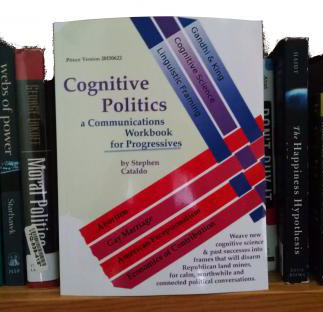

Countless blogs tell progressives how to communicate more effectively &mdash often in contradictory ways.
We're gathering diverse ideas, tools to dig deeper, and a reminder map for when you are posting on social media.
Focus on ideas in tension: Is it appropriate to feel angry when faced with sexism or racism? Should you be respectful so that you might change their minds and votes? Many blogs pick a side; we hope to make the tension visible.
We're being played, trolled.
Trump commits an outrage. The left attacks, leaving many moderates feeling besieged.
geek out: a variety of techniques
A Cognitive Politics project:
It's a toolkit and a map to outmaneuver the trolls. Each section here explores key ideas with
video or a web gadget introductin and links for you to explore deeper. After you're done digging, you'll have a map (make your own version!) of ideas to consider when creating or sharing social media. Then come back to see examples: we'll look at topics using the organization here. We'd love help, create your own versions and let us know if you want to share examples here.
When you're posting, who is your audience? When your friends share what you
post, who will be influenced? Are you filling allies with hope or burnng ourselves out?
Bringing swingable
voters into our tent or getting them to circle their wagons with Trump?
Tension: Fire up allies without pushing away wavering votes.
Graphic from Building a Movement to End the New Jim Crow, p56 &mdash highly recommended!
Hate movements are growing. People are being hurt.
What should we do with our anger? What is
justified? Effective? Whose anger is heard? Whose is drowned out?
Extending lessons from grief in our personal lives to politics.
Ch 3: Welcoming Communication
Redraw the "team" boundaries with non-defensive communication techniques.
Fake news and cognitive bias are strongest when we feel like are on opposite teams. What techniques
let you redraw team boundaries so all voters feel like they are on your team?
Tension between singing to the choir and expanding team boundaries.
Ch 4: Your Story Has a Frame
Language choices cascade.
Framing is vital when speaking to an audience.
What story does your mind construct around a word like "relief," or "protection," or "regulation"?
Politics is won when many stories reinforce an underlying metaphor and frame. Here's how.
Effective politics includes listening and talking: Framing is talking.
Framing is especially important when talking to an audience, as often happens on social media.
Ch 5: Staying Curious
Real conversations require openness and a willingness to learn. If you can't be convinced, how to you stay curious?
This will be based on Moral Foundations Theory as a tool to be curious about underlying values. Needs a graphic!
Curiosity is vital when speaking one-to-one.
When we act like lawyers on opposing sides, we don't convince each other. You have to be curious
if you want your conversation partner to be curious. What if they start out believing your friends
shouldn't get married? Let's be real: you're not going to be convinced. How can you still create a conversation
where your curiousity evokes theirs?
Effective politics includes listening and talking: Be curious and listen.
Tools you can use to be more attentive and turn yourself
into an effective agent for change on social media. Stop just reading blogs and clicking 'like' buttons:
get organized, take notes, figure out what works for you.
Intro

We're
Being
Played
.png)
1. Audience

2. Rings &
Politics

3. Welcoming
.png)
4. Frame

5. Find
Curiousity
6. Do It Yourself
More Resources
Cognitive Politics Book List (in progress)
Join Social Media Approaches for Respect and Tolerance, "promoting political change through transformative civil discourse with those with whom we disagree."